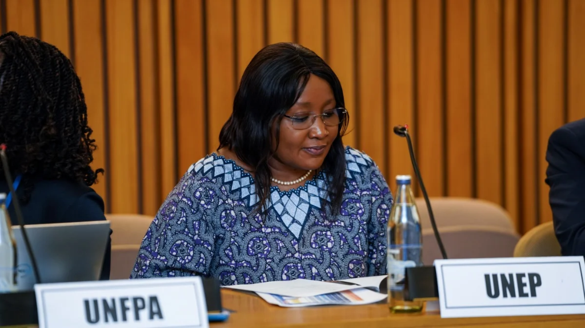
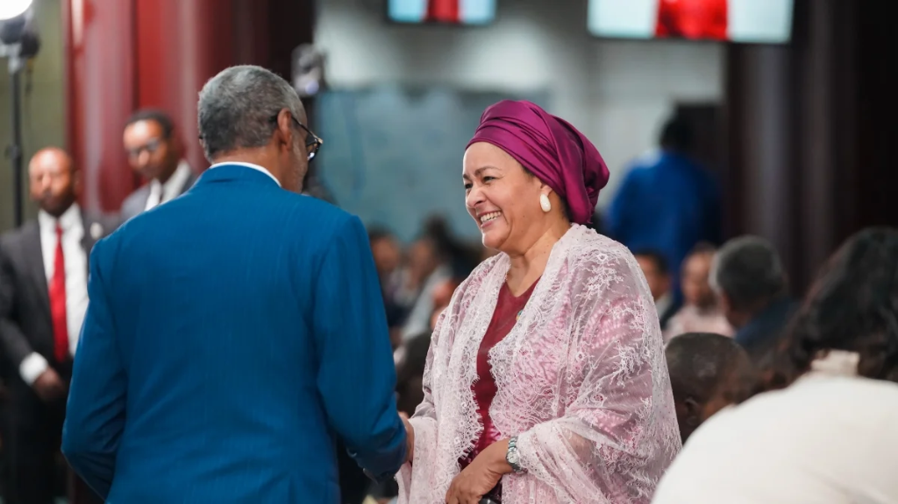

10TH SESSION
OF ARFSD
THE CHALLENGE
The 10th Session of the Africa Regional Forum on Sustainable Development brought together high-level policymakers, experts and development partners to address progress towards the 2030 Agenda and Agenda 2063. With both in-person and virtual participation and a multilingual audience, the forum required reliable audiovisual infrastructure and clear communication across the programme.
THE SOLUTION
Eternal provided an integrated technical solution combining audiovisual systems, multilingual translation and live production support. The approach was designed to keep presentations, discussions and proceedings clear and accessible across the physical and virtual event environment.
OUR APPROACH
Strategy
We developed a technical production approach around the forum’s hybrid format, multilingual audience and high-level programme, prioritizing clear communication and reliable event delivery.
Concept
A unified event environment connecting the physical venue, virtual audience and multilingual proceedings through coordinated audiovisual and translation systems.
Design
Screen and sound systems were configured for the United Nations Conference Centre, supported by simultaneous translation in four languages to facilitate communication across the forum.
Production
Eternal delivered the event’s screen, sound and translation systems, alongside live switching and technical coordination to support the programme throughout the three-day forum.
Experience
The technical setup supported a diverse audience of more than 1,700 participants, enabling clear presentations, discussions and multilingual proceedings across the hybrid event.
Content
Live switching and event photography documented the forum while supporting its live production and visual coverage, capturing key moments from the programme and its participants.
PRODUCTION ARCHIVE


